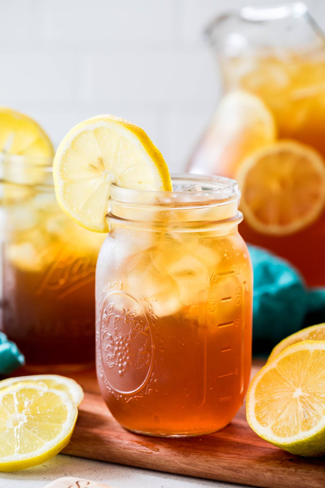

Home
Sweet Tea

Description
Sweet tea is a refreshing and creamy drink made with tea leaves, sugar, and milk. It is a popular and comforting beverage that is perfect for any time of the day.
Ingredients
- 4 cups water
- 4 tea bags
- 1/2 cup sugar
- 1/2 cup milk
Steps
- Bring the water to a boil in a saucepan.
- Remove the saucepan from heat and add the tea bags. Let steep for 5 minutes.
- Remove the tea bags and stir in the sugar until dissolved.
- Allow the tea to cool to room temperature, then stir in the milk.
- Refrigerate the sweet tea until chilled, about 1-2 hours.
- Serve the sweet tea over ice and enjoy!